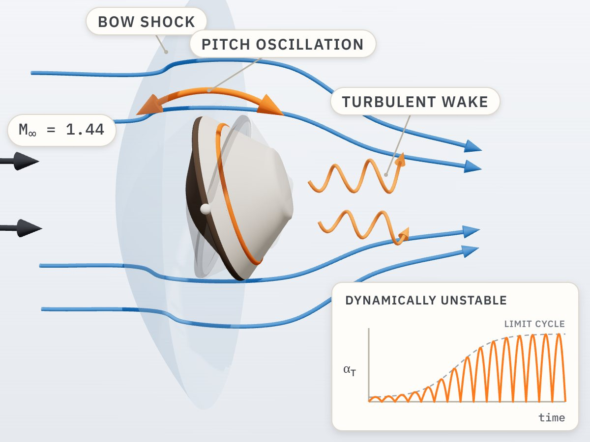

NASA Early Stage Innovations · PI · 2023–2027
Dynamic stability of reentry capsules
Physics-Guided Multifidelity Learning for Characterization of Blunt-Body Dynamic Stability (80NSSC23K0231, with a paid extension)
Blunt reentry capsules can become dynamically unstable in pitch at supersonic and transonic speeds, where small-amplitude oscillations grow while large-amplitude oscillations decay to a limit cycle. The lab characterizes this behavior from free-flight CFD of the Genesis capsule, using multifidelity data fusion, Bayesian estimation of pitch-damping derivatives, neural-operator surrogates, dynamic mode decomposition, and equation discovery.